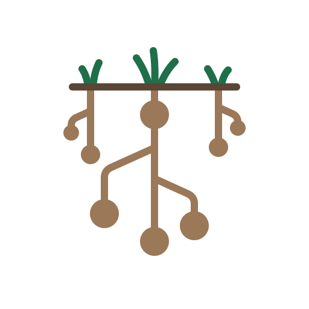

pronounced wōk•ē•ī
As a brand, wokeai is about using AI to fundamentally challenge systems of oppression.
Systemic or systematic oppression comes in many forms and as many systems: white supremacy, patriarchy, heterosexism, imperialism, American hegemony, and more. As a Mexican-American, when I say that American hegemony is bad, I say it in the same way that an anti-Zionist Jew says Zionism is bad. There are many acute systems of oppression, acute in that they target specific groups by race, religion, ethnicity, sex, gender identity, nationality, and more. But one system cuts across the most categories, including white supremacy, the biggest of the acute systems.
I am talking about capitalism, and even more so 21st-century, AI-powered, late-stage capitalism. This is what I thought “oligarchy” meant, but I have come to think that the word is sometimes used to avoid saying capitalism. Capitalism is the system that cuts across all the others because it runs on the exponential drive for profit. A first-century letter in the New Testament put it this way: “For the love of money is the root of all kinds of evil” (1 Timothy 6:10). wokeai is about using AI to dismantle any of these systems, and it begins as a transitional living worker cooperative with a worker-owner count of one.
The reason capitalism is one of the core roots of systemic oppression is that it quite literally birthed white supremacy, through what W. E. B. Du Bois called the public and psychological wage of whiteness in Black Reconstruction in America (1935) and what David Roediger later named The Wages of Whiteness (1991). So, quite simply, wokeai believes in worker cooperatives as “the first sprouts of the new” mode of production, in Marx’s phrase, a position argued today by Bernard Harcourt, the Morning Star, and Carlos Garrido.
The main app could have a branch for each system of oppression. Think of something like Craigslist, except the categories are the systems themselves. As you drill down into a system, you drill into dissecting it, identifying it through literature and evidence, and into resources for people who are its direct victims. For gender-based violence, for example, wokeai aims to be a hub for AI projects that directly help victims or directly challenge that system.
wokeai is also for people who struggle to get by socioeconomically. As a company, wokeai will be a transitional living worker cooperative: owned by the people who do the work, with the highest-paid person making at most three times the lowest, profits split close to evenly, and people from the margins coming through a program that starts at the roots of their trauma, finds the work they are built for, and lets them leave with real equity. It currently has a worker-owner count of one.
A starter list of existing open-source projects for running and studying AI on your own terms. We don't make these; we point to them. More to come as the community adds what it uses.
wōke•ĀĪ is what it does NOT sound like. wokeai is pronounced wōk•ē•ī (3 syllables).
wokeai is one word, always lowercase. The spelling says one thing to a glance. We’ll tell you how it’s said.
The community space and the tool sharing are not built yet. Right now there is a repository, this list of tools, and each other. Read the covenant. Bring the tools you use. Tell someone who is being crushed right now that there is a place.
Join on GitHub Buy me a coffee
The coffee link goes to Buy Me a Coffee; nothing from them loads on this page.